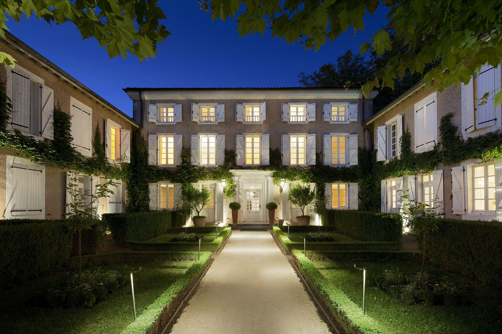

Train jusqu'à Aire-sur-l'Adour ou Mont-de-Marsan, taxi sur les derniers kilomètres. L'idée du soir : pas de programme. Apéro dans les jardins, dîner léger à la Ferme aux Grives, repos sur place — tout dîner ailleurs imposerait un taxi-retour, et ils se réservent au moins douze heures à l'avance [8].

Check-in sur le domaine : Les Prés d'Eugénie
Quatre bâtiments Guérard — la Maison de 1863, l'annexe du Couvent des Herbes (XVIIIᵉ siècle, dès 330 €), le rustique Logis de la Ferme aux Grives, et la Maison Rose 3-étoiles (dès 160 €) — partagent jardins, piscine chauffée, spa, et zéro à cent cinquante mètres séparent chaque clef de la salle à manger [4][5][6].
Ferme aux Grives — ou pique-nique sous tilleul
La table « rustique » de Guérard sur la même propriété : terrine, canard, vin de Tursan. Garder l'appétit pour samedi 20 h — c'est tout l'enjeu.
Coucher tôt : demain le marché ouvre à 8 h.